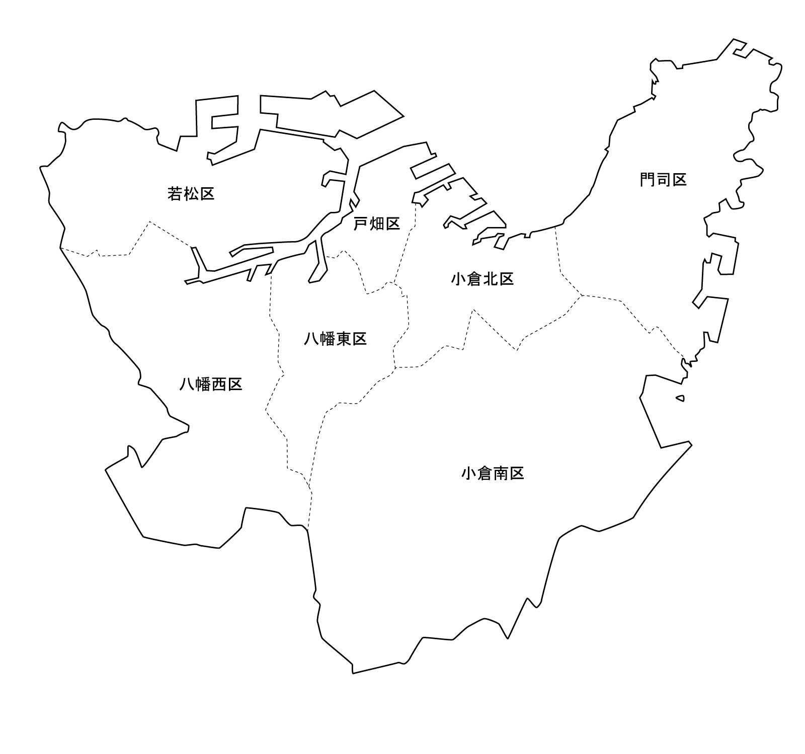

候補地は何も選択されていません。

-
{{target.name}}
- 場所
- 〒{{target.postcode}} {{target.area}} {{target.address}}
- サイト
- {{target.site}}
- 概要
- {{target.summary}}
- 記事
このホームページの使い方について
このウェブサイトは専門用語でいうところのシングルページアプリケーションです。普段ご利用のウェブサイトに比べて違った特徴があり独特の操作を要する場合がございますので、ご利用の際にはご注意ください。
登録された観光地の候補の中から抽出し、なんらかの関連付けによっていくつかをまとめた集団をテーマとする。
テーマの選択は上部の青枠の部からクリックしてください。
メイン画面はいくつかの画面をタブと表示画面で構成する。画面の種類は以下の通り。
- 全体マップ
- 北九州市の地図の画像とその上にマッピングされた観光地の位置を表すアイコンとマウスオーバー時にポップアップする観光地名の文字列部分が重ねられた画面
- 選択地一覧
- 概要とコンテンツ呼び出しによって詳細記事の表示がされる観光地のリストを表示する画面
サイドバーは検索ボックスとエリア選択などテーマの選択だけではできない絞り込みをする部品を配置する。また、お知らせなどの付加情報を載せる。 フッターはコピーライトなどのアプリの著作に関する情報を載せる。
機能仕様の概要 マウスイベントによってテーマとエリアを選ぶことによって内部的にフィルタリングした候補のリストデータを作る。また簡易的な検索によってテーマ選択時のように候補のリストデータも内部的に作る。ある特定の候補を選ぶ場合はその候補がひとつだけあるリストデータを作る。それらリストデータは地図上での配置と概要のリストの表示に使用する。選択地一覧での項目ではもし用意されていれば詳細な解説などを記述した記事を読み込ませ表示する事を可能にする。
一覧
-
{{e.id}} | {{e.name}} | {{e.tel}} | {{e.site}}{{e.postcode}} |{{e.area}} | {{e.address}} | {{e.longitude}} | {{e.latitude}}{{e.summary}}
| id | name | entries |
|---|---|---|
| {{t.id}} | {{t.name}} | {{t.entries}} |